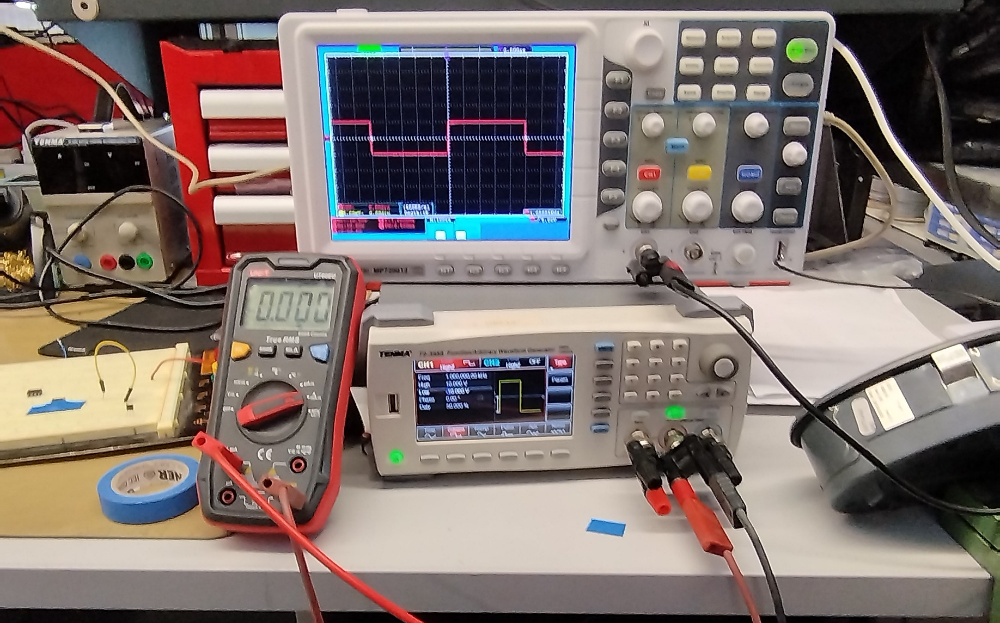

Compétence : Vérifier
Utilisation d'outils de mesures adaptés
Dans le cadre de mes travaux pratiques en électronique et au travail, j'ai régulièrement utilisé des outils de mesure adaptés tels que l'oscilloscope, le multimètre et l'analyseur de réseau vectoriel (VNA) pour effectuer des vérifications précises. Par exemple, lors de la conception de la carte électronique pour le projet LemarConnect, en effet sur le premier prototype, j'ai utilisé un multimètre pour vérifier les contiunuité des pistes entre les composants J'ai aussi utilisé un analyseur de réseau vectoriel pour vérifier les performances de l'antenne de communication.

Rédaction d'une procédure de test
Lors de la réalisation de mon projet de Robot suiveur de
ligne, j'ai
rédigé une procédure de test pour vérifier le bon fonctionnement des capteurs et calibrer le robot
de sorte a ce qu'il suive la ligne. Cette procédure a été
utilisée lors de la validation du prototype.
Pour en savoir plus sur la procédure de test, voir compte rendu de SAE 2.1 dans le fichier zip
de la page du robot suiveur de ligne.